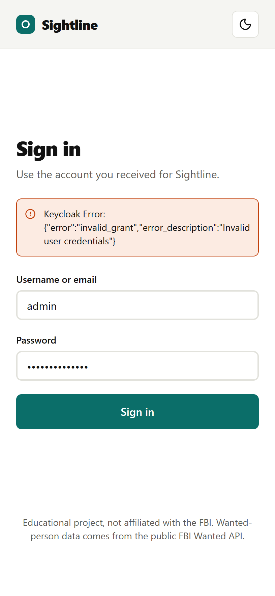
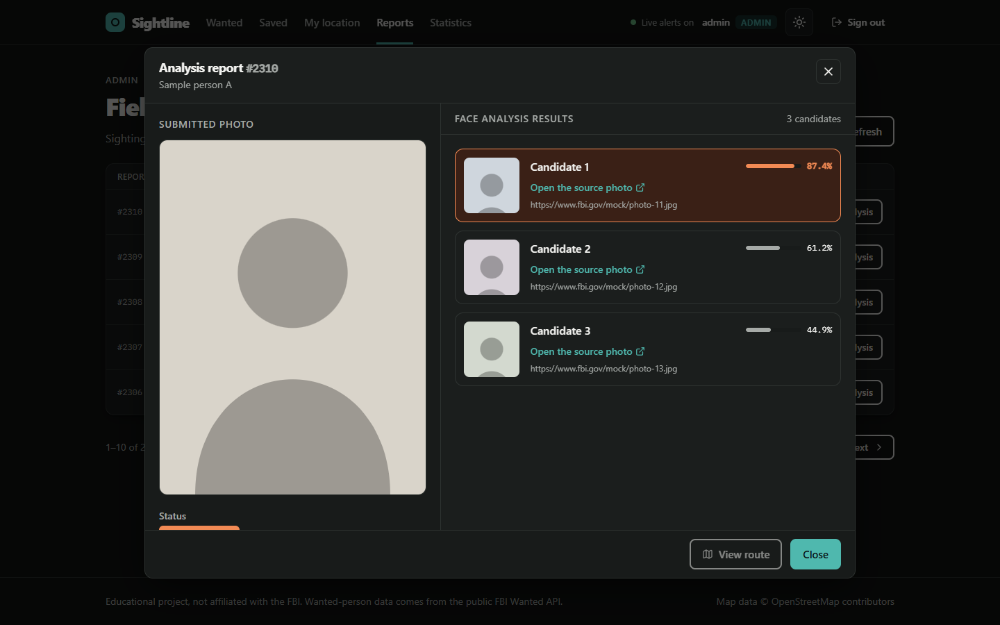
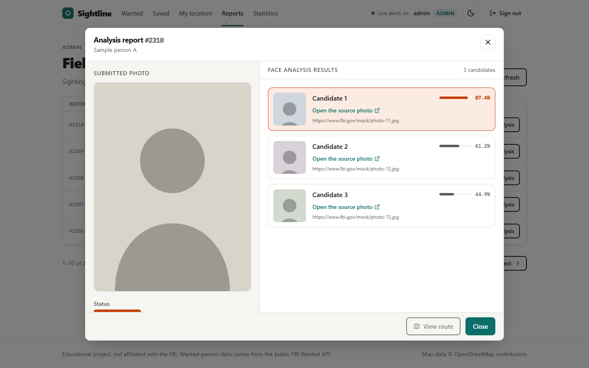
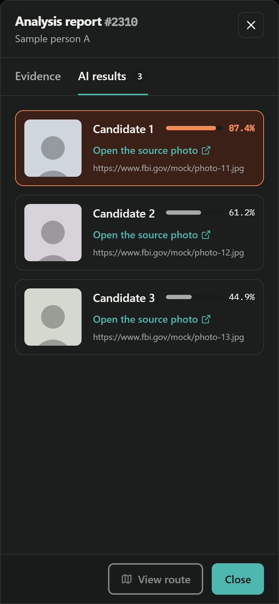
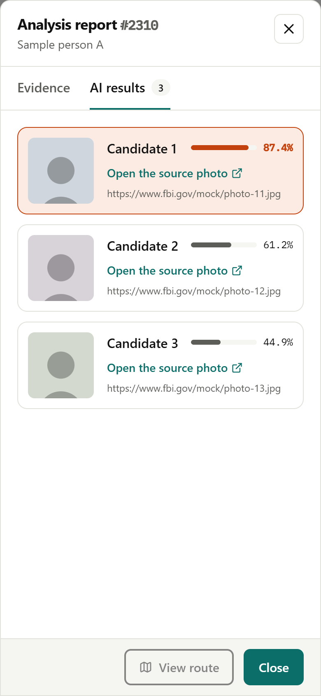
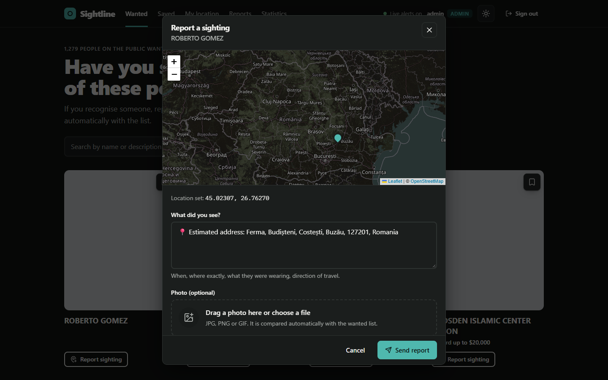
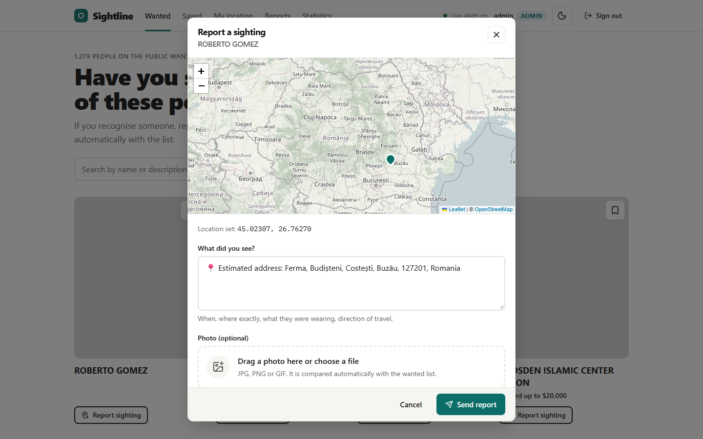
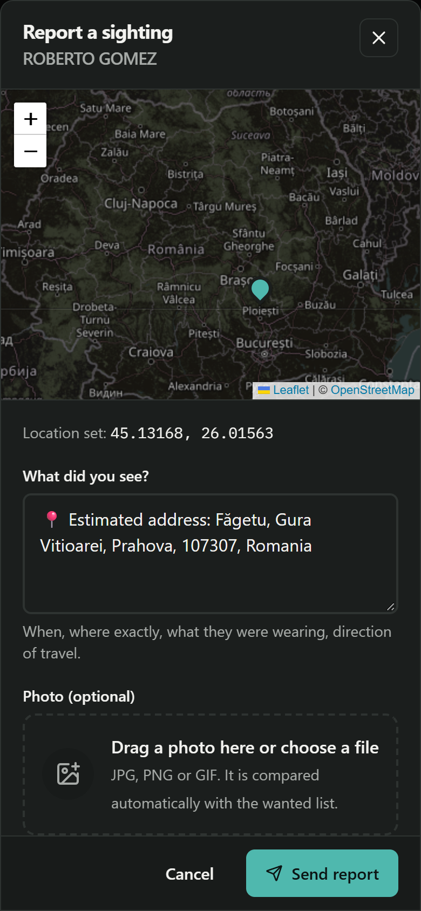

Before: original UI (fbi.gov photos blocked for headless Chrome, hence "No Image"). After: redesign; fbi.gov photos replaced by a neutral placeholder only in the screenshot script. Files named -mock use sample data injected in the screenshot browser (no reports exist in the dev DB).







